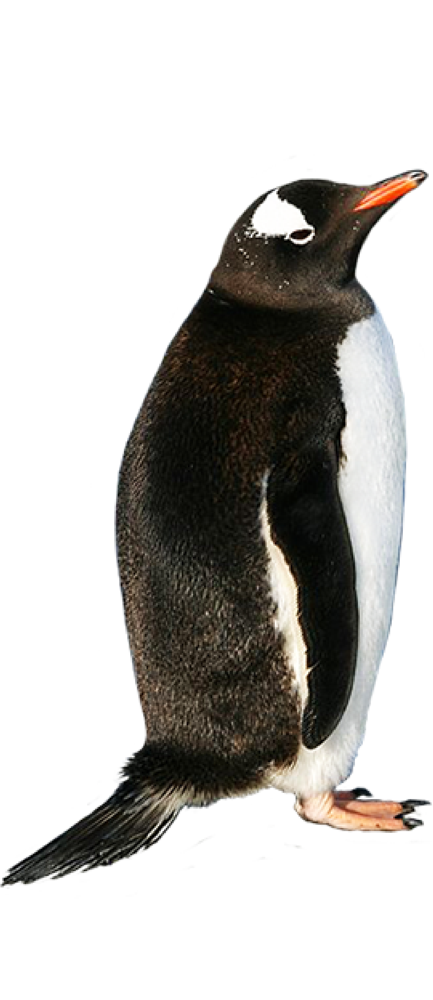
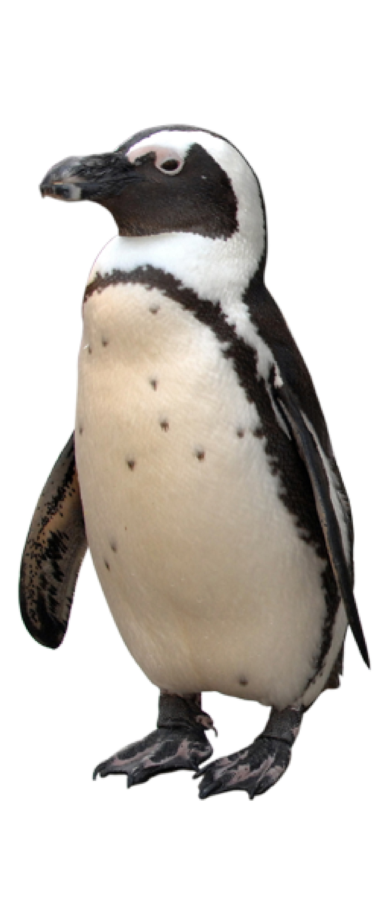
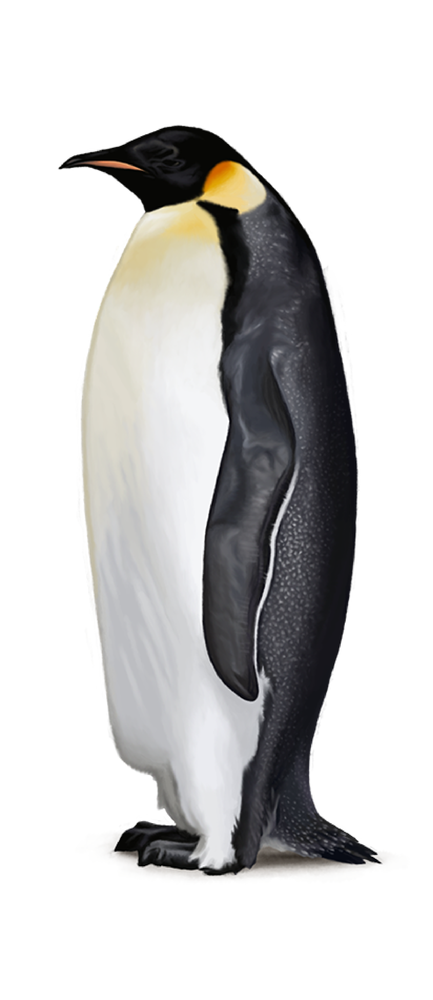

Emperor
The emperor penguin (Aptenodytes forsteri) is the tallest and heaviest of all living penguin species and is endemic to Antarctica. The male and female are similar in plumage and size, reaching 122 cm (48 in) in height and weighing from 22 to 45 kg (49 to 99 lb). The dorsal side and head are black and sharply delineated from the white belly, pale-yellow breast and bright-yellow ear patches. Like all penguins it is flightless, with a streamlined body, and wings stiffened and flattened into flippers for a marine habitat.
Adelie
The Adelie penguin (Pygoscelis adeliae) is a species of penguin common along the entire Antarctic coast, which is their only residence. They are among the most southerly distributed of all seabirds, along with the emperor penguin, the south polar skua, the Wilson's storm petrel, the snow petrel, and the Antarctic petrel. They are named after Adelie Land, in turn named for Adèle Dumont D'Urville, the wife of French explorer Jules Dumont d'Urville who discovered these penguins in 1840.
African
The African penguin (Spheniscus demersus), also known as the jackass penguin and black-footed penguin is a species of penguin, confined to southern African waters. It is also widely known as the "jackass" penguin for its donkey-like bray, although several related species of South American penguins produce the same sound. Like all extant penguins it is flightless, with a streamlined body, and wings stiffened and flattened into flippers for a marine habitat.